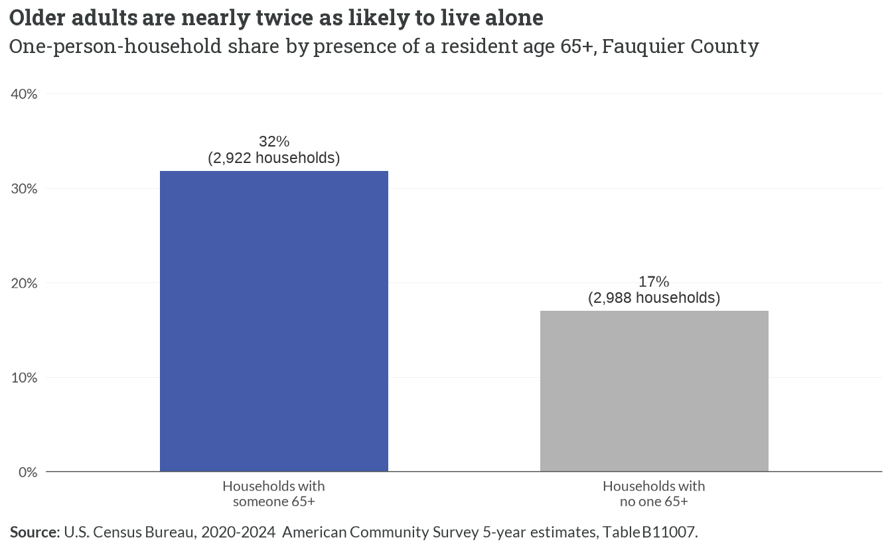
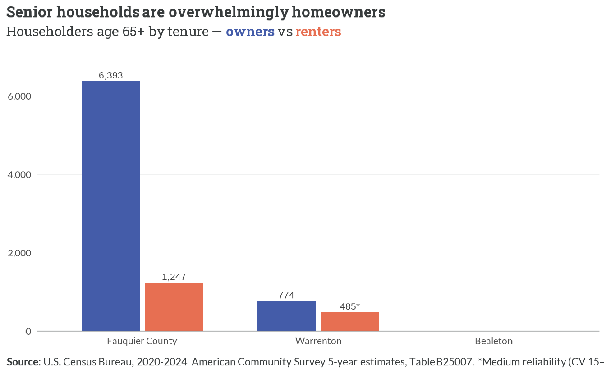
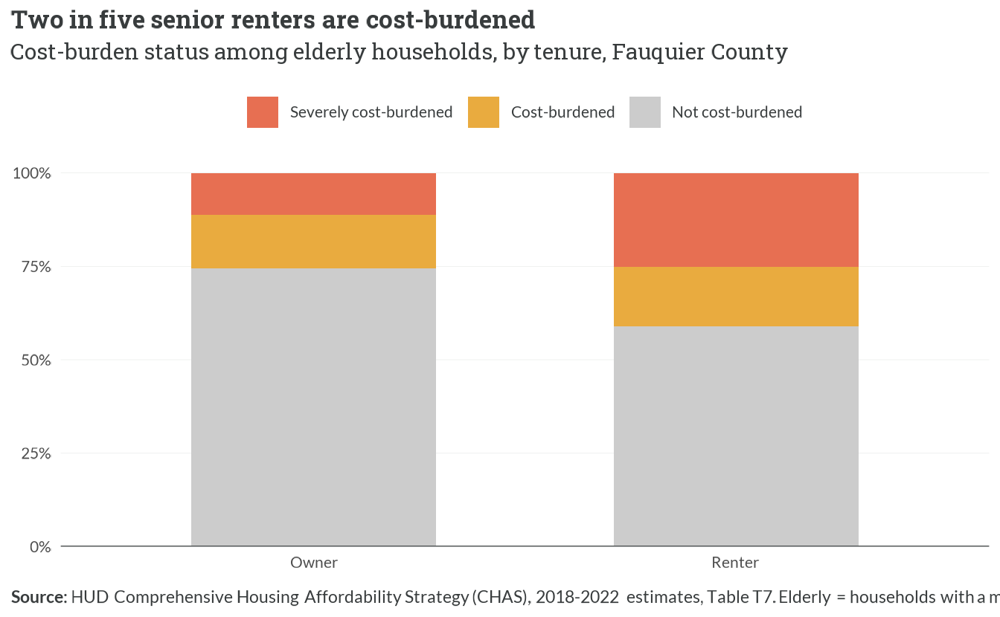
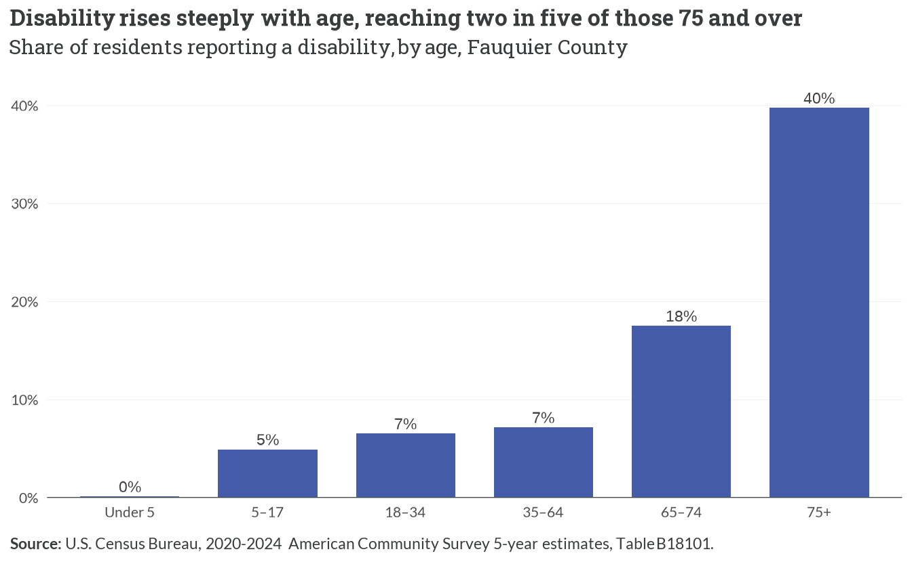
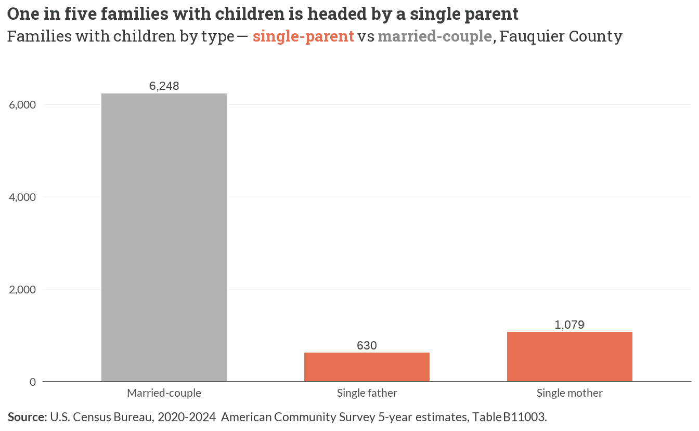
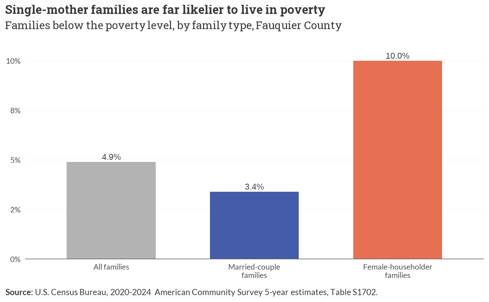
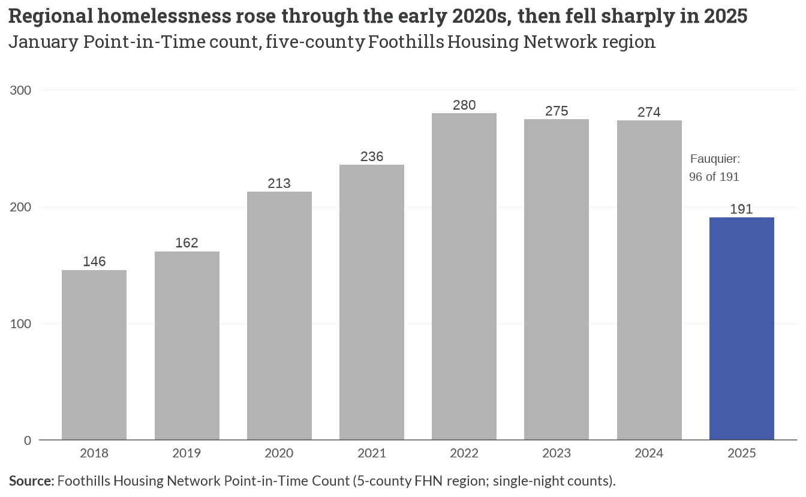
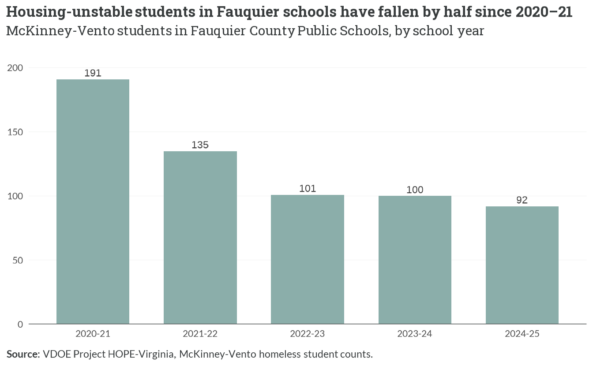
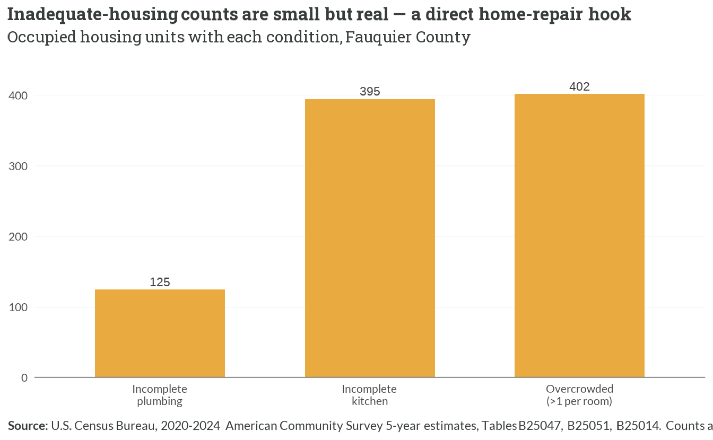
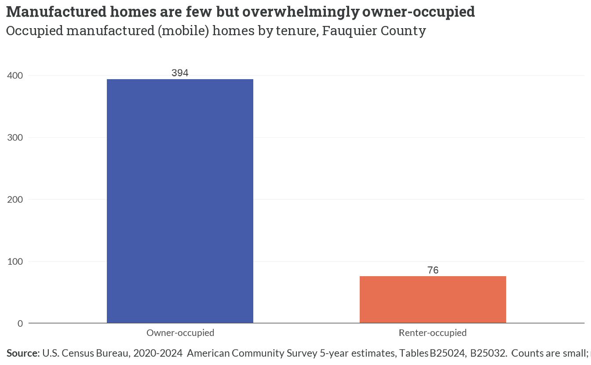

6 Vulnerable Populations
6.1 Older adults: a growing, largely aging-in-place population
Interviews identified wage and housing gaps especially for the county’s young and aging population. There’s a perception that neither the young can return to Fauquier, nor can seniors age in place effectively. Of the county’s 9,173 households with a resident aged 65 or older, about 32% (or 2,922 households) live alone, compared to the 17% of one-person households with younger individuals.
Living alone in later life raises housing vulnerability concerns: there is only a single fixed income to cover rising costs and maintenance, let alone possible medical attention. Additionally, with a fixed income, there often aren’t additional funds available to be able to downsize, especially with the effectively non-existent entry level market.
This aging and single population is set to grow throughout the years. By 2050, the Weldon Cooper Center projects that there will be roughly 18,208 residents aged 65 and over, and 9,844 aged 75 and up (Chapter 7). This demographic, both the highest age and need group, is the fastest expanding in Fauquier, and has implications for the future of housing that interviewees have already picked up on.
About 84% of the county’s senior householders own their homes. Aging in place overwhelmingly means aging in an owned single-family house, meaning also taking on the maintenance, rising taxes, and accessibility burdens to be able to stay.

There is a small senior renter population, as well, and they likely have the fewest options locally. The county’s small apartment market (Chapter 4) offers little dedicated senior product, and the county’s tightest affordable-rental deficit falls towards those with the lowest incomes (Figure 5.4). When considering options to move into a different, more accessible home, the market cannot and has not provided for seniors.
WarningReliability
Warrenton carries a larger senior-renter share than the county, consistent with its role as the principal rental submarket (its renter cell is Medium reliability); Bealeton’s senior counts are too small to report reliably (CV > 30%) and are suppressed.
Senior renters carry the heavier cost-burden: about 41% of the county’s aging renter households are cost-burdened versus 26% of elderly owners (CHAS defines “elderly” as 62 or older, slightly broader than the 65+ threshold used elsewhere in this chapter). This is the mirror of the tenure pattern seen county-wide (Figure 5.3). Because seniors are overwhelmingly owners (Figure 6.2), owner burden reaches more households in absolute terms, but the renter rate is higher and concentrated among those least able to move because of their age and incomes.

The towns show the same renter-heavier pattern. Senior renters in both Warrenton and Bealeton are burdened at roughly 60%.1 When paired with living with a disability, smaller and accessible homes continue to represent a huge gap in the housing market.
1 These cells rest on very small CHAS samples, so only the county figures are charted here.
6.2 People with disabilities
About 10% of the county population, or 7,134 county residents, report living with a disability, but the prevalence is highly dependent on age. Disability is minimally experienced among children, then rises sharply among those aged 65 and older. Roughly 40% of residents aged 75 and over report having a disability, the same cohort projected to grow most by 2050 (Figure 6.1).
The overlap of disability, advanced age, and homeownership (Figure 6.2) is a direct hook for home-repair and accessibility-retrofit programs, accommodating and preserving households that own but cannot easily adapt or maintain their homes. Additionally, land use permitting cottage style units, or moderately dense entry level homes, could eventually serve both seniors and young people returning to work in Fauquier.

Not only does the county need more homes, it also needs homes that are lower cost, accessible, and smaller than those currently available for rent or on the market. A projected surge of over 18,208 residents over 65 by 2050 means that this current mismatch in supply and availability is ultimately a structural one. What seniors and those with disabilities might downsize into is just not available, keeping those seniors householders that would otherwise move in homes that younger returners cannot compete for.
6.3 Single-parent families and family poverty
Of the county’s 7,957 families with children under 18, about 21% (or 1,709 families) are headed by a single parent. The large majority of these are mothers (1,079 single-mother vs 630 single-father families). Single-parent families depend on one income in a market where even two average local wages fall short of the median home price (Figure 5.6). This leaves them heavily exposed to the county’s affordable-rental deficit and ultimately housing cost burdens.
Female-householder families face a poverty rate of 10%, nearly three times the 3% rate for married-couple families, and roughly double the 5% all-family rate.

WarningReliability
Town-level single-parent counts are small and both fall below the reliability threshold (CV > 30%), so the figure is reported county-only.
With roughly 2,450 female-householder families county-wide, this is a sizeable group that combines vulnerabilities of lower to moderate income, single earnership, and (often) children — a high-priority segment for deeply affordable rental and ownership assistance.

Family poverty and single parenthood compound the housing-cost pressures documented in Chapter 5: the households with the least income are those competing hardest for the county’s scarcest affordable units. Their incomes are proportionately more tied up, leaving little remaining for the cost of moving, increases in utility costs, or glasses for a child. On top of that, with the scarcest units being those that are both low-cost and accessible, single parent households and impoverished families with children are likely competing with single seniors for housing.
6.4 Homelessness
WarningRead these counts carefully
The two homelessness series measure different geographies and are counts, not rates — small single-night or point-in-time tallies that swing year to year.
- The Point-in-Time (PIT) trend covers the full five-county Foothills Housing Network region (Culpeper, Fauquier, Madison, Orange, Rappahannock), not Fauquier alone. Only the 2025 count is broken out by county — Fauquier accounted for 96 of the region’s 191 people (Orange and Rappahannock reported zero).
- The VDOE McKinney-Vento series is Fauquier-specific (students in Fauquier County Public Schools who lacked stable housing at some point in the year) and uses a broader federal definition than PIT, so the two are not additive and not directly comparable.
The regional PIT count climbed from 146 people in 2018 to a peak near 280 in 2022, held through 2024. It then fell to 191 in 2025, a single year’s drop that especially on small counts should be read cautiously, rather than as an established trend.

In 2025, Fauquier accounted for 96 of the 191 unhoused people region-wide or 50% of the regional homelessness population. This is the largest single-county share, though the county-level split exists only for 2025.
Point-in-time counts only capture people who are unhoused at a given moment, on the street or persistently homeless populations. PIT counts tell us who is out on count nights or morning, so they understate the full spectrum of housing instability. School-based McKinney-Vento data (below) can capture housing instability more broadly than a PIT count, as McKinney-Vento focuses on students who lacked fixed, adequate housing at any point in the year instead of solely those who are outside. McKinney-Vento could count students based on their families doubling up with others, staying in a motel, or sleeping on a neighbor’s couch.
McKinney-Vento numbers fell from 191 in the 2020–21 school year to 92 in 2024–25, roughly halving over five years. The decline tracks the post-pandemic recovery that came with record rental assistance expansion. On counts this small, year-to-year movement is volatile and a single school year should not be over-read.

The McKinney-Vento count (a full school year, broader definition) and the PIT tally (one night, literally homeless) measure different things and should not be ranked against each other. They are a reminder that most housing instability, especially in rural communities, is doubled-up or precariously housed, and not always literally unsheltered or in the street.
6.5 Housing quality and manufactured housing
Housing quality, especially for rentals, can play a real factor in housing costs. A small but real slice of the stock is physically inadequate: about 125 units lack complete plumbing, 395 lack a complete kitchen, and 402 are overcrowded (more than one occupant per room).
These inadequacies affect households differently, but are certainly more manageable with more income. With the limited supply of available rentals priced below $1,613 a month (the ACS midpoint), it’s likely that a significant number of these physically inadequate rentals have costly leases and utilities.

These are counts, not rates, representing a fraction of a percent of the county’s 28,621 units, but they map directly onto Habitat’s home-repair and critical-repair mission.
WarningReliability
Town-level counts are too small to report reliably; the county figures are the dependable signal, and inadequate units concentrate in the oldest segments of the stock (Chapter 1).
TipWhy manufactured housing matters
Manufactured homes, or mobile homes, are an unsubsidized, naturally-occurring affordable source of housing. This stock is worth preserving; manufactured homes are also more exposed to age, condition, and (for those on rented lots) land-tenure risk.
There are about 470 manufactured homes in the county, only 1.6% of the county’s housing stock. 84% are owner-occupied, making manufactured housing one of the county’s few remaining sources of lower-cost ownership opportunities.

TipTown spotlight — Bealeton’s manufactured housing is undercounted by ACS
Manufactured-home and mobile-home communities are a known feature of the Bealeton–Remington area, but the ACS place-level estimate for Bealeton CDP records zero manufactured units. This is because the area’s largest community, Marsh Run (approximately 350 units), sits just southeast of the CDP boundary on Route 17 (Chapter 1), not because there is no manufactured housing nearby. The dependable figure is therefore the county total of 470 manufactured homes; Bealeton’s actual share is understated in the place-level data and should be treated as a known gap rather than a true absence.